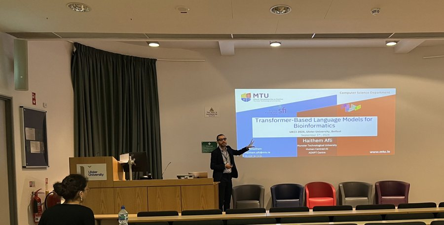
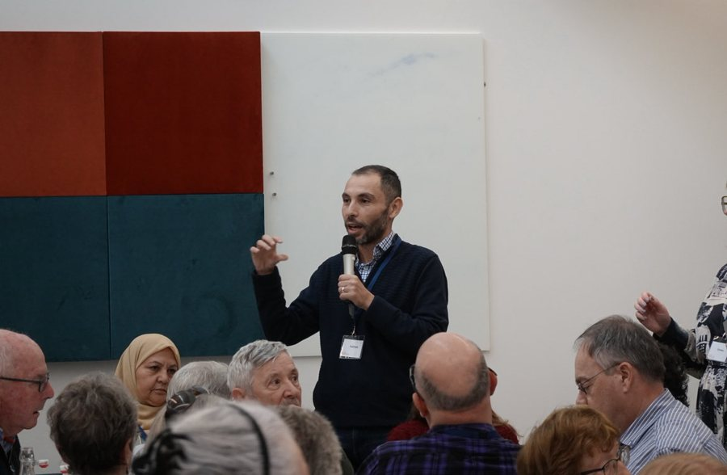
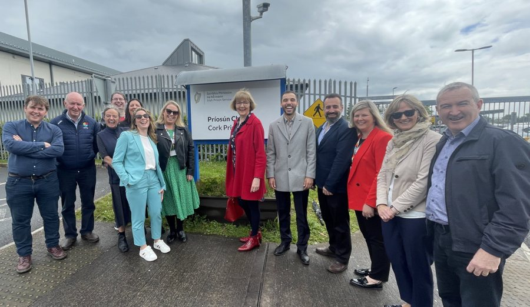
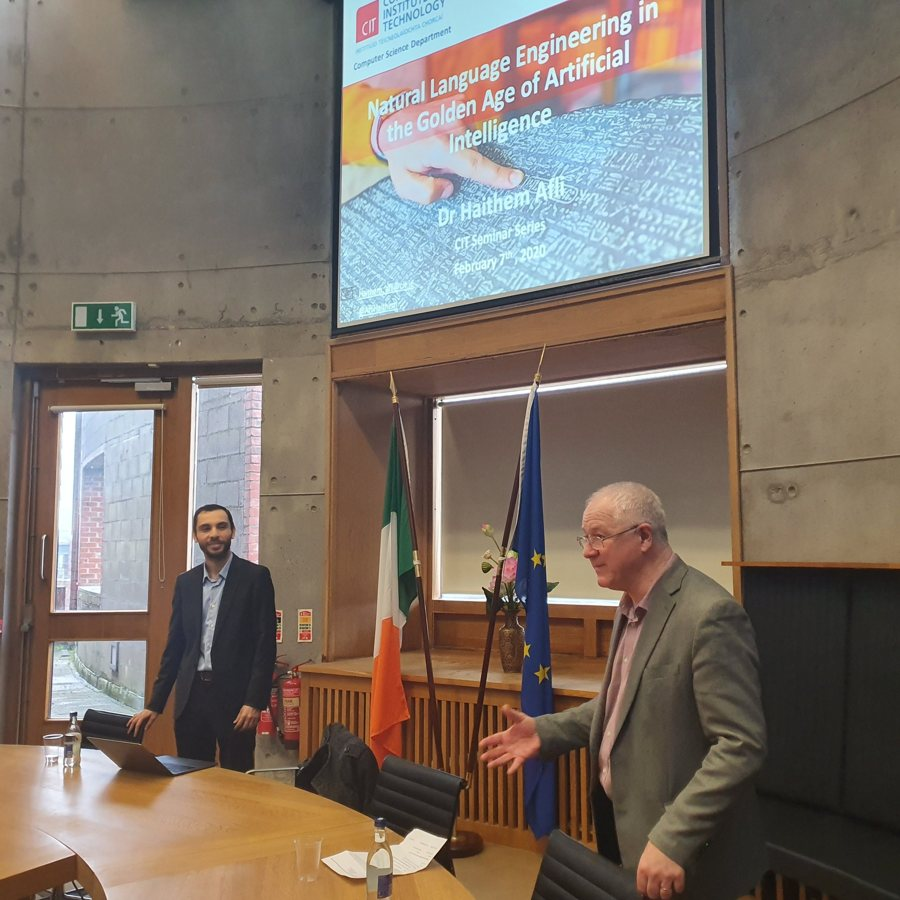
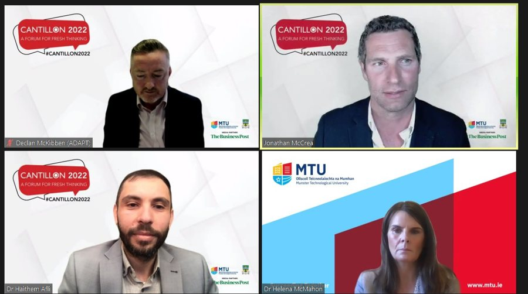
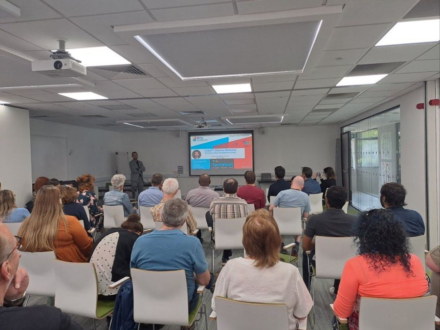

Talks & Outreach
Selected invited talks, keynotes and public engagement.








Selected talks
- The Language of Life: Large Language Models in Decoding Biological Data — Hologenomic Data Analysis Symposium, São Carlos, Brazil, 2024 (Keynote)
- Transformer-based models for bioinformatics (GenDAI) — UK Computational Intelligence Conference (UKCI), Ulster University, 2024 (Invited Speaker)
- Predictive Tools for Migration Management and Trustworthy AI — ITFLOWS Policy Workshop, Brussels (Speaker)
- General Chair — Political NLP Workshop @ LREC-COLING, Torino, 2024 (General Chair)